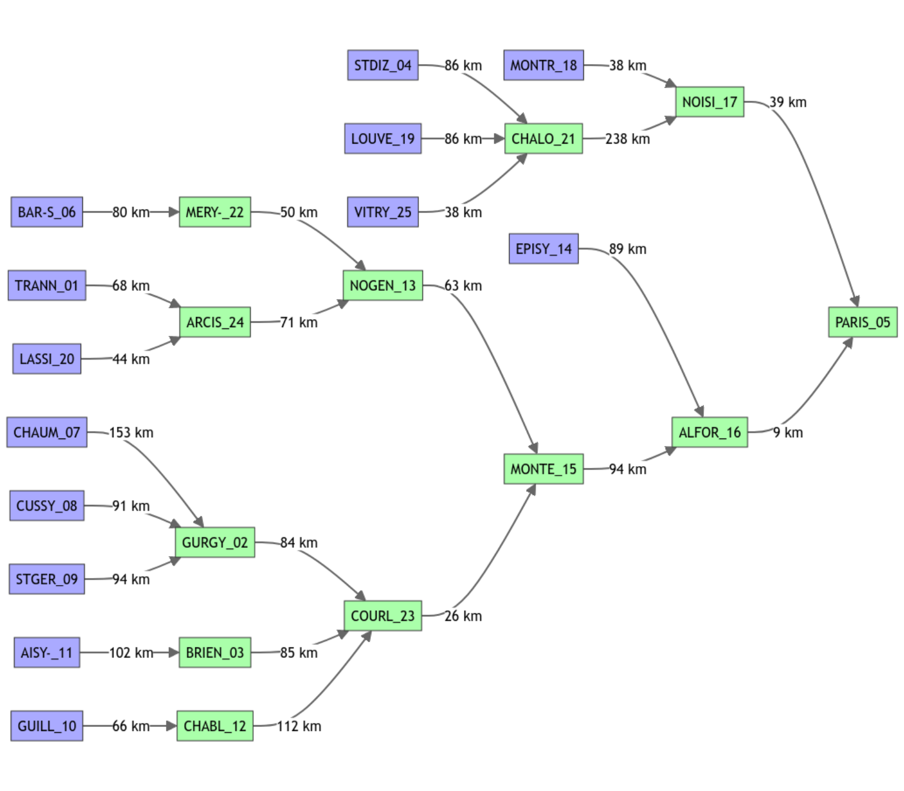

vignettes/seinebasin/V01_First_network.Rmd
V01_First_network.Rmd## Loading required package: airGR##
## Attaching package: 'airGRiwrm'## The following objects are masked from 'package:airGR':
##
## Calibration, CreateCalibOptions, CreateInputsCrit,
## CreateInputsModel, CreateRunOptions, RunModelThe example below is inspired by the semi-distributed model developed in the ClimAware project (Theobald et al. 2014), in which we used the daily rainfall-runoff model GR4J.
The aim of this vignette is to create the semi-distributed network necessary for the hydrological model.
The model is distributed according to the gauging stations described in Dorchies et al. (2014).
First, we must read the list of nodes and the associated metadata:
seine_nodes <- read.table(
file = system.file("seine_data", "network_gauging_stations.txt", package = "seinebasin"),
sep = ";", header = TRUE, fileEncoding = "UTF-8", quote = "\"", stringsAsFactors = FALSE
)
seine_nodes## id_sgl id_hydro lambert2.x lambert2.y area
## 1 TRANN_01 766626.1 2369152 1557.06
## 2 GURGY_02 H2221010 689713.0 2320549 3819.77
## 3 BRIEN_03 H2482010 695313.0 2332549 2979.77
## 4 STDIZ_04 H5071010 791113.0 2407349 2347.53
## 5 PARIS_05 H5920010 602213.0 2427449 43824.66
## 6 BAR-S_06 H0400010 751913.0 2348349 2340.37
## 7 CHAUM_07 716518.4 2241747 216.50
## 8 CUSSY_08 H2172310 726013.0 2275149 247.99
## 9 STGER_09 718512.9 2266649 402.74
## 10 GUILL_10 H2322020 731013.0 2282349 488.71
## 11 AISY-_11 H2452020 742413.0 2298149 1349.51
## 12 CHABL_12 H2342010 709613.0 2314149 1116.27
## 13 NOGEN_13 685912.9 2389349 9182.39
## 14 EPISY_14 H3621010 633413.0 2371049 3916.71
## 15 MONTE_15 645112.9 2376849 21199.39
## 16 ALFOR_16 H4340020 606013.0 2420349 30784.71
## 17 NOISI_17 H5841010 620913.0 2428949 12547.72
## 18 MONTR_18 H5752020 638013.0 2431849 1184.81
## 19 LOUVE_19 H5083050 791613.0 2393949 461.74
## 20 LASSI_20 H1362010 759513.0 2385549 876.53
## 21 CHALO_21 H5201010 747713.0 2441349 6291.55
## 22 MERY-_22 H0810010 714913.0 2390949 3899.62
## 23 COURL_23 H2721010 660813.0 2370449 10687.35
## 24 ARCIS_24 H1501010 733313.0 2394749 3594.60
## 25 VITRY_25 H5172010 768513.0 2418849 2109.14
## description id_aval distance_aval
## 1 L'Aube à Trannes ARCIS_24 68100
## 2 L'Yonne à Gurgy COURL_23 83612
## 3 L'Armançon à Brienon-sur-Armançon COURL_23 84653
## 4 La Marne à Saint-Dizier CHALO_21 85570
## 5 La Seine à Paris NA
## 6 La Seine à Bar-sur-Seine MERY-_22 79766
## 7 L'Yonne à Chaumard GURGY_02 153074
## 8 Le Cousin à Cussy-les-Forges GURGY_02 91378
## 9 La Cure à St-Germain GURGY_02 94152
## 10 Le Serein à Guillon CHABL_12 66026
## 11 L'Armançon à Aisy-sur-Armançon BRIEN_03 102428
## 12 Le Serein à Chablis COURL_23 111781
## 13 La Seine à Nogent-sur-Seine MONTE_15 63215
## 14 Le Loing à Épisy ALFOR_16 89196
## 15 La Seine à Montereau ALFOR_16 94475
## 16 La Seine à Alfortville PARIS_05 9263
## 17 La Marne à Noisiel PARIS_05 39384
## 18 Le Grand Morin à Montry NOISI_17 37915
## 19 La Blaise à Louvemont CHALO_21 86165
## 20 La Voire à Lassicourt ARCIS_24 43618
## 21 La Marne à Châlons-sur-Marne NOISI_17 237937
## 22 La Seine à Méry-sur-Seine NOGEN_13 49933
## 23 L'Yonne à Courlon-sur-Yonne MONTE_15 26159
## 24 L'Aube à Arcis-sur-Aube NOGEN_13 70926
## 25 La Saulx à Vitry-en-Perthois CHALO_21 38047Using that information, we must create the GRiwrm object that lists
the nodes and describes the network diagram. It is a dataframe of class
GRiwrm with specific column names:
id: the identifier of the node in the network.down: the identifier of the next hydrological node
downstream.length: hydraulic distance to the next hydrological
downstream node.model: Name of the hydrological model used (E.g.
“RunModel_GR4J”). NA for other types of nodes.area: Area of the sub-catchment (km2). Used
for hydrological models such as GR models. NA if not
used.The CreateGRiwrm function helps to rename the columns of
the dataframe and assign the variable classes.
seine_nodes$id_aval[seine_nodes$id_aval == ""] <- NA
seine_nodes$distance_aval <- as.double(seine_nodes$distance_aval) / 1000
seine_nodes$model <- "RunModel_GR4J"
# Generate the GRiwrm object
griwrm <- CreateGRiwrm(seine_nodes,
list(id = "id_sgl",
down = "id_aval",
length = "distance_aval"))
griwrm## id down length area model donor
## 1 TRANN_01 ARCIS_24 68.100 1557.06 RunModel_GR4J TRANN_01
## 4 STDIZ_04 CHALO_21 85.570 2347.53 RunModel_GR4J STDIZ_04
## 6 BAR-S_06 MERY-_22 79.766 2340.37 RunModel_GR4J BAR-S_06
## 7 CHAUM_07 GURGY_02 153.074 216.50 RunModel_GR4J CHAUM_07
## 8 CUSSY_08 GURGY_02 91.378 247.99 RunModel_GR4J CUSSY_08
## 9 STGER_09 GURGY_02 94.152 402.74 RunModel_GR4J STGER_09
## 10 GUILL_10 CHABL_12 66.026 488.71 RunModel_GR4J GUILL_10
## 11 AISY-_11 BRIEN_03 102.428 1349.51 RunModel_GR4J AISY-_11
## 14 EPISY_14 ALFOR_16 89.196 3916.71 RunModel_GR4J EPISY_14
## 18 MONTR_18 NOISI_17 37.915 1184.81 RunModel_GR4J MONTR_18
## 19 LOUVE_19 CHALO_21 86.165 461.74 RunModel_GR4J LOUVE_19
## 20 LASSI_20 ARCIS_24 43.618 876.53 RunModel_GR4J LASSI_20
## 25 VITRY_25 CHALO_21 38.047 2109.14 RunModel_GR4J VITRY_25
## 2 GURGY_02 COURL_23 83.612 3819.77 RunModel_GR4J GURGY_02
## 3 BRIEN_03 COURL_23 84.653 2979.77 RunModel_GR4J BRIEN_03
## 12 CHABL_12 COURL_23 111.781 1116.27 RunModel_GR4J CHABL_12
## 21 CHALO_21 NOISI_17 237.937 6291.55 RunModel_GR4J CHALO_21
## 22 MERY-_22 NOGEN_13 49.933 3899.62 RunModel_GR4J MERY-_22
## 24 ARCIS_24 NOGEN_13 70.926 3594.60 RunModel_GR4J ARCIS_24
## 13 NOGEN_13 MONTE_15 63.215 9182.39 RunModel_GR4J NOGEN_13
## 17 NOISI_17 PARIS_05 39.384 12547.72 RunModel_GR4J NOISI_17
## 23 COURL_23 MONTE_15 26.159 10687.35 RunModel_GR4J COURL_23
## 15 MONTE_15 ALFOR_16 94.475 21199.39 RunModel_GR4J MONTE_15
## 16 ALFOR_16 PARIS_05 9.263 30784.71 RunModel_GR4J ALFOR_16
## 5 PARIS_05 <NA> NA 43824.66 RunModel_GR4J PARIS_05The diagram of the network structure is represented below with in blue the upstream nodes with a GR4J model and in green the intermediate nodes with an SD (GR4J + LAG) model.
plot(griwrm)
The daily mean precipitation and potential evaporation at the scale of the intermediate sub-basins are extracted from the SAFRAN reanalysis (Vidal et al. 2010).
The daily naturalized flow is provided by Hydratec (2011).
These data are embedded in the R package ‘seinebasin’, which is not publicly available.
The GRiwrm InputsModel object is a list of airGR InputsModel objects. The identifier of the sub-basin is used as a key in the list, which is ordered from upstream to downstream.
The airGR CreateInputsModel function is extended in order to handle the GRiwrm object that describes the basin diagram:
InputsModel <- CreateInputsModel(griwrm, DatesR, Precip, PotEvap)## CreateInputsModel.GRiwrm: Processing sub-basin TRANN_01...## CreateInputsModel.GRiwrm: Processing sub-basin STDIZ_04...## CreateInputsModel.GRiwrm: Processing sub-basin BAR-S_06...## CreateInputsModel.GRiwrm: Processing sub-basin CHAUM_07...## CreateInputsModel.GRiwrm: Processing sub-basin CUSSY_08...## CreateInputsModel.GRiwrm: Processing sub-basin STGER_09...## CreateInputsModel.GRiwrm: Processing sub-basin GUILL_10...## CreateInputsModel.GRiwrm: Processing sub-basin AISY-_11...## CreateInputsModel.GRiwrm: Processing sub-basin EPISY_14...## CreateInputsModel.GRiwrm: Processing sub-basin MONTR_18...## CreateInputsModel.GRiwrm: Processing sub-basin LOUVE_19...## CreateInputsModel.GRiwrm: Processing sub-basin LASSI_20...## CreateInputsModel.GRiwrm: Processing sub-basin VITRY_25...## CreateInputsModel.GRiwrm: Processing sub-basin GURGY_02...## CreateInputsModel.GRiwrm: Processing sub-basin BRIEN_03...## CreateInputsModel.GRiwrm: Processing sub-basin CHABL_12...## CreateInputsModel.GRiwrm: Processing sub-basin CHALO_21...## CreateInputsModel.GRiwrm: Processing sub-basin MERY-_22...## CreateInputsModel.GRiwrm: Processing sub-basin ARCIS_24...## CreateInputsModel.GRiwrm: Processing sub-basin NOGEN_13...## CreateInputsModel.GRiwrm: Processing sub-basin NOISI_17...## CreateInputsModel.GRiwrm: Processing sub-basin COURL_23...## CreateInputsModel.GRiwrm: Processing sub-basin MONTE_15...## CreateInputsModel.GRiwrm: Processing sub-basin ALFOR_16...## CreateInputsModel.GRiwrm: Processing sub-basin PARIS_05...
dir.create("_cache", showWarnings = FALSE)
save(seine_nodes, griwrm, InputsModel, file = "_cache/V01.RData")